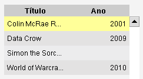

Vista Tabela
Caminho de menu: Ver > Vista Tabela
A vista tabela é uma espécie de folha de cálculo, listando os itens. Cada linha é um item.
Com as Definições de vista pode alterar as colunas/campos mostrados na vista.

Ordenar
Além das opçõs normais de ordenação (explicadas aqui) tem uma maneira
muito rápida de ordenar a vista Tabela. É só clicar no cabeçalho das colunas para ordenar o
conteúdo da vista.
Editar valores
Editar valores na tabela é muito simples. Clique na célula e comece a escrever, texto (para campos de texto), números
(para campos numéricos), ou selecione um valor da lista. Em campos de texto também pode premir F2. Uma vez satisfeito,
não se esqueça de gravar, clicando em  (Gravar tudo) ou em
(Gravar tudo) ou em
 (gravar só o item selecionado),
na barra de ferramentas.
(gravar só o item selecionado),
na barra de ferramentas.
O resto é explicado aqui.